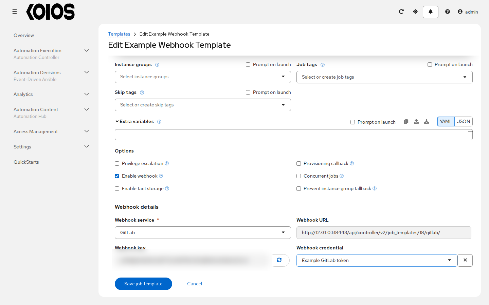
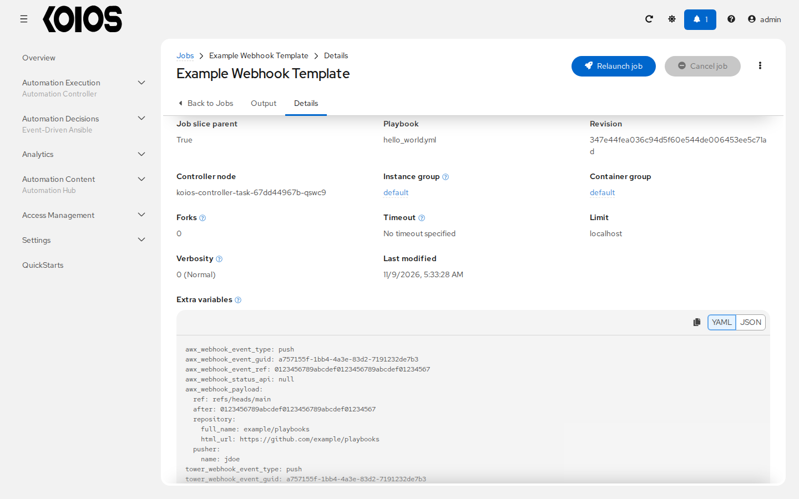

25. Working with Webhooks
A Webhook provides the ability to execute specified commands between apps over the web. Automation controller provides webhook integration with GitHub, GitLab and Bitbucket Data Center. This section describes the procedure for setting up a webhook through GitHub and GitLab; the steps on the services may differ in their current versions, so refer also to their documentation. The Webhook URL of a template has the form https://<koios host>/api/controller/v2/job_templates/<id>/github/ (or .../gitlab/, .../bitbucket_dc/, and workflow_job_templates for workflows); the platform gateway accepts these requests without a platform login, and automation controller checks them with the Webhook key.
The webhook post-status-back functionality for GitHub and GitLab is designed for work only under certain CI events. Receiving another kind of event will result in messages like the one below in the service log:
awx.main.models.mixins Webhook event did not have a status API endpoint associated, skipping.
25.1. GitHub webhook setup
Automation controller can launch jobs from GitHub webhook events. To send job status back for supported pull request events, select a GitHub Personal Access Token credential in the template’s Webhook credential field. The token must have permission to update status on the repository. The webhook key authenticates incoming deliveries; the token is used for outgoing status updates. See webhooks in job templates and in workflow job templates.
Go to a specific GitHub repo you want to configure webhooks and click Settings.
Under Options, click Webhooks.
On the Webhooks page, click Add webhook.
To complete the Add Webhook page, you need to enable webhooks in a job template (or in a workflow job template), which will provide you with the following information:
Copy the contents of the Webhook URL from the job template, and paste it in the Payload URL field. GitHub uses this address to send results to.
Set the Content type to application/json.
Copy the contents of the Webhook Key from the job template above and paste it in the Secret field.
Leave Enable SSL verification selected.
Next, you must select the types of events you want to trigger a webhook. Any such event will trigger the Job or Workflow. In order to have job status (pending, error, success) sent back to GitHub, you must select Pull requests in the individual events section.
Leave Active checked and click Add Webhook.
After your webhook is configured, it displays in the list of webhooks active for your repo, along with the ability to edit or delete it. Click on a webhook, and it brings you to the Manage webhook screen. Scroll to the very bottom of the screen to view all the delivery attempts made to your webhook and whether they succeeded or failed.
For more information, refer to the GitHub webhooks documentation.
25.2. GitLab webhook setup
Automation controller can launch jobs from GitLab webhook events. To send job status back for supported push, tag push and merge request events, select a GitLab Personal Access Token credential in the template’s Webhook credential field. The token must have permission to update status on the repository. The webhook key authenticates incoming deliveries; the token is used for outgoing status updates. See webhooks in job templates and in workflow job templates.

Go to a specific GitLab repo you want to configure webhooks and click Settings > Webhooks.
To add the webhook, you need to enable webhooks in a job template (or in a workflow job template), which will provide you with the following information:
Copy the contents of the Webhook URL from the job template above, and paste it in the URL field. GitLab uses this address to send results to.
Copy the contents of the Webhook Key from the job template above and paste it in the Secret Token field.
Next, you must select the types of events you want to trigger a webhook. Any such event will trigger the Job or Workflow. Automation controller can send the job status (pending, error, success) back to GitLab for Push events, Tag push events and Merge request events.
Leave Enable SSL verification selected.
Click Add webhook.
After your webhook is configured, it displays in the list of Project Webhooks for your repo, along with the ability to test events, edit or delete the webhook. Testing a webhook event displays the results at the top of the page whether it succeeded or failed.
For more information, refer to the GitLab webhooks integrations documentation.
25.3. Payload output
The entire payload is exposed as an extra variable. To view the payload information, open the job launched by the webhook and look at the Extra variables of its Details tab. Automation controller adds these variables, with the tower_ prefix and, while the Include Deprecated AWX Variable Prefix setting is enabled, also with the awx_ prefix:
tower_webhook_event_type: the type of event, such aspushorpull_requesttower_webhook_event_guid: the identifier of the deliverytower_webhook_event_ref: the commit or reference of the eventtower_webhook_status_api: the address used to send the status back, when the event has onetower_webhook_payload: the whole payload of the event
The example below shows a job launched by a GitHub push event.
